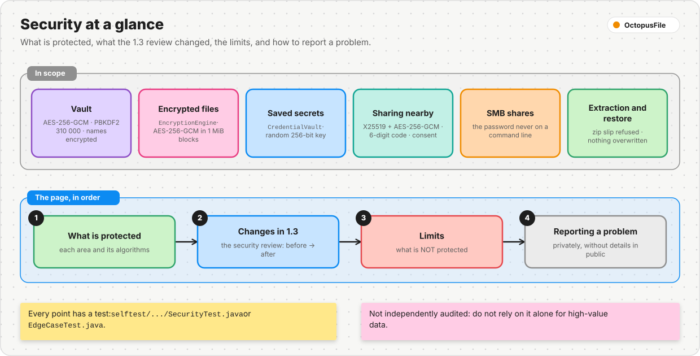
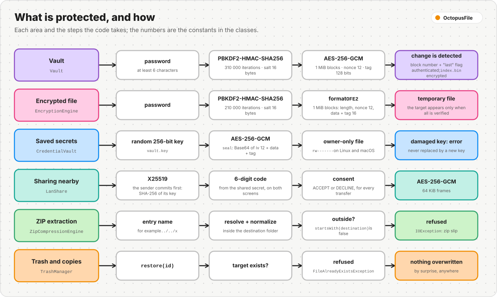
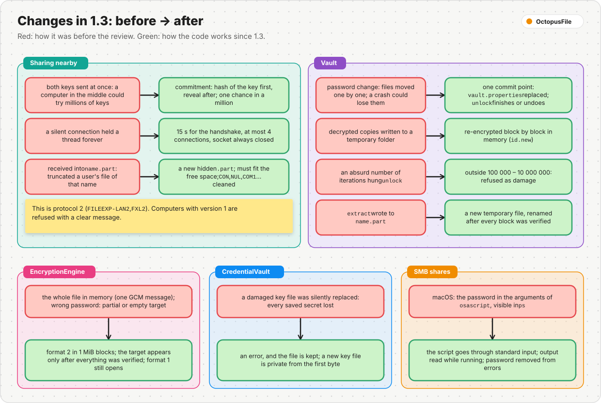
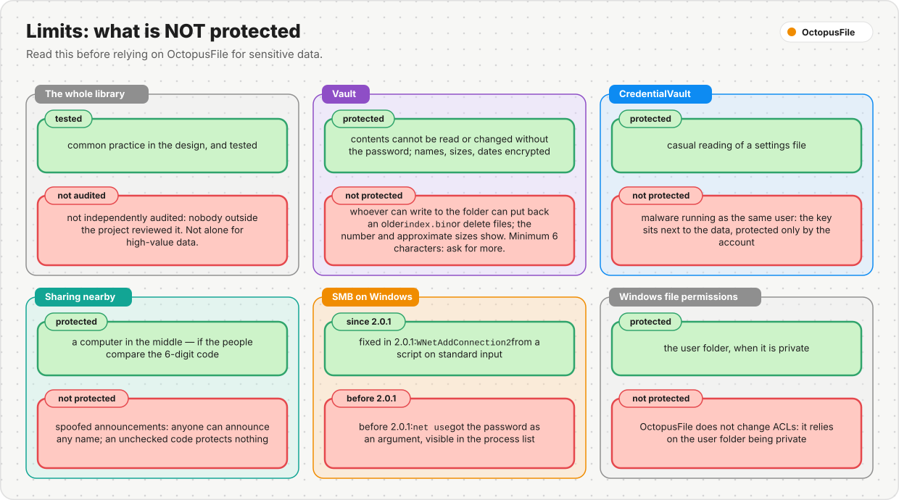
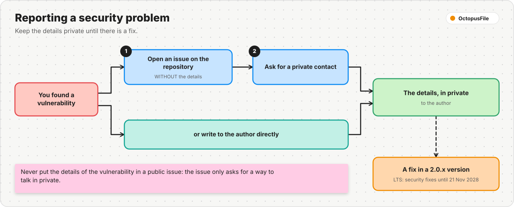

Docs › Storage & security
Security

What OctopusFile protects, what the 1.3 review changed, and the limits you should know before relying on it. Every point below has a test in selftest/.../SecurityTest.java or EdgeCaseTest.java.
What is protected#

| Area | Protection |
|---|---|
| Vault | AES-256-GCM in 1 MiB blocks, PBKDF2-HMAC-SHA256 (310 000 iterations), encrypted index of names; reordering, cutting or changing a block is detected |
| EncryptionEngine | the same block design for a single file, with a password (PBKDF2 with 210 000 iterations) |
| CredentialVault | small secrets encrypted with a random key in an owner-only file |
| Sharing nearby | X25519 + AES-256-GCM, 6-digit confirmation code, consent of the receiver for every transfer |
| ZIP extraction | entries that would land outside the destination ("zip slip") are refused |
| Trash and copies | nothing is overwritten by surprise; restoring over an existing file is refused |
Changes in 1.3#

Sharing nearby
- Commitment before the key exchange. Before 1.3 both computers sent their public keys at the same time, so a computer in the middle could try millions of its own keys in a few seconds until the two 6-digit codes matched — the code gave almost no protection against an active attacker. Now the sender first sends a hash of its key, receives the key of the receiver, and only then reveals its own; a key that does not match the hash ends the connection. An attacker in the middle has one chance in a million. This is protocol version 2; computers with version 1 are refused with a clear message.
- A silent connection can no longer hold a thread forever (15 s to finish the handshake), at most 4 incoming connections are handled at a time, and a socket is always closed when the handshake fails.
- Received files are written to a new hidden
.partfile (before:name.part, which truncated a user's file with that name), must fit in the free space, and Windows device names (CON,NUL,COM1…) and trailing dots are cleaned.
Vault
- Changing the password could lose data. Files were moved into place one by one before the new settings were written: a crash in the middle left files encrypted with a password that nothing could open. Now the change has a single commit point (replacing
vault.properties) andunlockfinishes or undoes an interrupted change. - Changing the password wrote decrypted copies of the files to a temporary folder. It is now done block by block in memory.
- An absurd number of iterations in
vault.properties(which would hangunlock) is refused as damage. extractuses a new temporary file instead ofname.part.
EncryptionEngine
- Decrypting kept the whole file in memory (one GCM message) and wrote a partial or empty target when the password was wrong. The new format works in blocks and the target appears only after everything was verified. Old files still open.
CredentialVault
- A damaged key file was silently replaced by a new key, making every saved secret unreadable. It is now an error and the file is kept; a new key file is created private from the first byte.
SMB shares
- On macOS the password went in the arguments of
osascript, visible to every user of the computer inps. The script now goes through the standard input. The output ofnet use/gio/osascriptis read while the program runs (a full pipe blocked it) and the password is removed from error messages.
Limits#

- Not independently audited. The design follows common practice and is tested, but nobody outside the project has reviewed it. Do not rely on it alone for high-value data.
- Vault: an attacker who can write to the vault folder can put back an older
index.bin(rollback) or delete files; they cannot read or change contents without the password. Names, sizes and dates are encrypted, the number and the approximate sizes of the files are not. Passwords need at least 6 characters: ask for more in your UI. - CredentialVault: the key sits next to the data, protected by the permissions of the user account. It protects against casual reading of a settings file, not against malware running as the same user.
- Sharing nearby: the code protects only if the people compare it. Discovery announcements can be spoofed (anyone can announce any name); the code and the consent question are what make a transfer safe.
- SMB on Windows: fixed in 2.0.1. Before,
net usereceived the password as an argument, visible to other programs in the process list; now the Windows API (WNetAddConnection2) is called from a script read on the standard input, as on macOS, so the password is never on a command line. - Windows file permissions: OctopusFile does not change ACLs; it relies on the user folder being private.
Reporting a problem#

Open an issue on the repository without the details of the vulnerability and ask for a private contact, or write to the author directly.